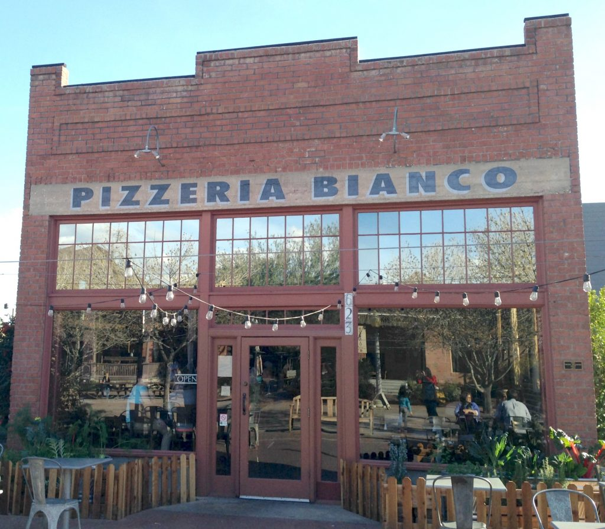

About: This webpage serves as a digital front door, offering visitors a taste of what to expect for certain restaurants. Key practical details, like the location, hours of operation, reservation options, and contact information, are prominently displayed for convenience.
Crumbl Cookies is a popular bakery chain known for its rotating menu of gourmet cookies,
including its signature chocolate chip cookie.
Walking into a Crumbl Cookies store is a delightful experience for your senses. The aroma of
freshly baked cookies greets you as you step inside, and the modern, pink-themed decor creates
a cheerful and inviting atmosphere. The menu is displayed on digital screens, showcasing the
rotating weekly flavors alongside their classic chocolate chip cookie.
Crumbl - Arcadia
Hours: 8AM - 10PM
3736 E Indian School Rd, Phoenix
(602) 661-3777
